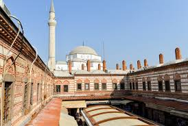

Aydınoğulları Beyliği'nin Osmanlı İmparatorluğu idaresi altına girmesinden 150 yılı aşkın sene sonra, Aydınoğulları soyundan gelen Özdemiroğlu Molla Yakup Bey tarafından yaptırıldığı kabul edilmektedir

"İzmir"e dönmek için basın